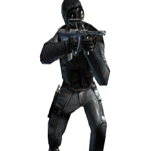

El Equipo de Rescate de Rehenes del FBI fue fundado en 1982 y está entrenado para rescatar a aliados retenidos por fuerzas hostiles. Su lema es "Servare Vitas" (Salvar vidas).


| Antiterroristas | ||||||
|---|---|---|---|---|---|---|
| Facciones | Descripción | Counter-Strike | Condition Zero | Source | Global Offensive | Counter-Strike 2 |
| FBI |
Además de responder a los ataques terroristas, la Oficina Federal de Investigaciones (FBI) de los Estados Unidos
responde a los robos a bancos, al espionaje y a la guerra cibernética. El Equipo de Rescate de Rehenes del FBI fue fundado en 1982 y está entrenado para rescatar a aliados retenidos por fuerzas hostiles. Su lema es "Servare Vitas" (Salvar vidas). |
|||||
| GIGN |
Elite de unidad francesa anti-terrorista, el GIGN, fue diseñado para ser una fuerza de respuesta rápida que con
decisión podría reaccionar a cualquier ataque terrorista a gran escala. Que consiste en no más de 100 hombres, los
GIGN han ganado su reputación a través de una historia de operaciones exitosas. |
|||||
| GSG-9 |
El GSG-9 alemán es uno de los grupos de Anti-Terroristas, la unidad fue fundada por Ulrich Wegener, después de la
masacre de Munich en 1972. Ellos son famosos desde 1977 por sus valerosos rescates ante situaciones de secuestro y
son considerados como una de las mejores unidades anti-terroristas en todo el mundo. |
|
||||
| IDF |
La Fuerza de Defensa de Israel (Hebreo: Tzva Ha'Hagana Ley'Israel) fue fundada el 31 de mayo de 1948, poco después
de la fundación del Estado de Israel. Las FDI se hicieron famosas al año siguiente en la Guerra de Independencia de
Israel en 1949. Consisten en fuerzas terrestres, aéreas y de la Armada. Otras acciones en las que participaron las
FDI fueron la Guerra de los Seis Días, la Guerra de Yom Kippur y las dos Guerras del Líbano. |
|||||
| Kidotai |
Los Kidotai japoneses son unidades especiales antidisturbios, en Japón se utilizan para el control de multitudes
y la respuesta a las grandes perturbaciones del orden público. La facción fue formada después de los disturbios en
el Palacio Imperial en 1952. |
|||||
| SAS |
Fundado por Sir David Stirling durante la 2ª Guerra Mundial, los miembros de este equipo pueden considerarse como
maestros de sabotaje, asesinato, rescate de rehenes, asaltos y redadas. Este equipo luchó junto a las fuerzas aliadas
en Irak y en Irlanda del Norte. |
 | |
|||
| Team SEAL 6 |
Team SEAL 6, también conocido como ST-6, que ahora es conocdo como DEVGRU, es la facción anti-terrorista
estadounidense que sirve bajo la Marina de los EE.UU. Formado por Richard Marcincko en la década de 1980, este
grupo es enviado a las misiones que requieren su experiencia como rescate de rehenes, asalto, asesinato y extracción,
son parte de USSOCOM, una unidad de comando de la vida real de los SEALs. |
|
||||
| Spetsnaz |
Las principales misiones del Spetsnaz ruso son la adquisición de información de inteligencia sobre las principales
instalaciones militares u económicas y, o bien destruir o poner fuera de acción a las organizaciones implicadas en
actos de sabotaje o subversión, llevar a cabo la operación de castigo contra los rebeldes, y la formación y
capacitación destacamentos insurgentes. |
|||||
| SWAT |
El SWAT es el equivalente estadounidense del Kidotai Japones, las unidades especiales antidisturbios.
Al igual que sus homólogos los SEAL Navy, asisten en ataques e incursiones maestras, en algunas misiones,
ayudan a los SWAT en aviso permanente, o el SWAT puede controlar sin formato. |
|||||
| Terroristas | ||||||
|---|---|---|---|---|---|---|
| Facciones | Descripción | Counter-Strike | Condition Zero | Source | Global Offensive | Counter-Strike 2 |
| Akunin |
Akunin son miembros de sindicatos tradicionales del crimen organizado en Japón. Los Kidotai japoneses han
tenido una larga y terrible historia con ellos. |
|||||
| Anarchist |
"Los anarquistas son jóvenes luchadores por la libertad - llenos de fuego y espíritu para enfrentar a los corruptos
oligarcas del mundo". |
|||||
| Arctic Avengers |
Facción terrorista sueca fundada en 1977. Famoso por su bombardeo de la embajada de Canadá en 1990. |
 |
||||
| Balkan |
Estos sugieren que la facción representa a los grupos terroristas eslavas del Sur en las naciones balcánicas,
probablemente uno anteriormente en el Bloque Comunista. |
|||||
| Elite Crew |
Fundamentalistas del Medio Oriente basados en la dominación mundial y otras malas acciones. |
|||||
| Guerrilla Warfare |
Una facción Terrorista fundada en el Medio Oriente, este grupo tiene una reputación de crueldad. Su disgusto
por la forma de vida americana se ha demostrado en sus bombardeo en 1982 a un autobús escolar lleno de músicos
del Rock and Roll. |
|||||
| Midwest Militia |
Midwest Militia es un movimiento de extrema derecha que consiste en formales e informales grupos paramilitares
armados. Este grupo contra el gobierno fue fundado en 1993, después de la disputa en Waco, Texas. |
|||||
| Phoenix Connexion |
Conocida por eliminar a todo aquel que se interponga en su camino, la Facción Phoenix es uno de los grupos
terroristas más temidos de Europa del este. Se Formó poco después de la disolución de la URRS. |
|||||
| Piratas |
Los piratas modernos del Cuerno de África afirman que sus acciones denotan la autodefensa de sus aguas territoriales,
aunque la extorsión y el asesinato cometidos por los autoproclamados “guardacostas” aseguran estas afirmaciones. |
|||||
| Profesional |
Los profesionales son ladrones de alta tecnología y bien equipados sin agenda política o religiosa. "Acosado por una organización desconocida pero bien financiada, los profesionales son experimentados mercenarios privados que no dudarán en disparar a ninguna oposición, por un precio". |
 |
||||
| Separatistas |
Afirmando un deseo abrumador de autodeterminación, esta facción minoritaria europea se ha inclinado a actos de
terror atroces para lograr su visión nacionalista. |
 |
||||